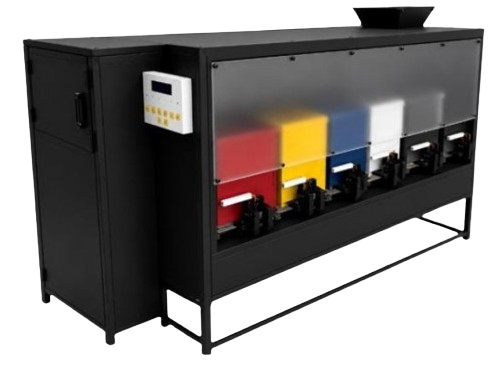
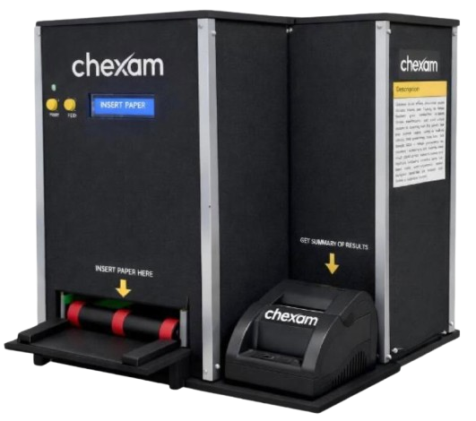

It’s Noel,
your bug negotiator.
Computer Engineer
01
About / Objective
To join a growing organization as a Software Developer, where I can apply my technical foundation in software development, embedded systems, and computer vision while continuing to build my skills and contribute meaningfully to the team’s projects and growth.
02
Professional Summary
Computer Engineering graduate with hands-on experience developing software for real-time embedded and computer-vision systems using Python and C++, experienced in system integration, multithreaded programming, debugging, computer vision, and hardware-software communication. Built and integrated software across Arduino, ESP32, and Raspberry Pi platforms, with a growing focus on professional software development and building reliable applications.
Embedded & Hardware
Computer Vision
Other Tools
Core Competencies
04
Experience
Technical Support Intern
Universal Access & Systems Solutions (UAS) · Pasig City
- Diagnosed and resolved network and systems issues using structured troubleshooting methods applicable to software debugging and technical problem-solving.
- Applied systematic root-cause analysis in hands-on network configuration labs (Cisco Packet Tracer), building a disciplined approach to isolating and fixing technical issues.
- Prepared and delivered a technical presentation to supervisors, demonstrating clear communication of technical concepts to non-technical stakeholders.
05
Featured Undergraduate Projects

TELA-SORB: Semi-Automated Machine for Sound-Absorbing Panel Production Using Textile Waste
Designed and built a semi-automated system that converts post-industrial textile waste into acoustic sound-absorbing panels, integrating mechanical, electrical, and software subsystems.
Capstone
CHEXAM: An Offline Automated Exam Checker Device
Developed an offline device capable of automatically checking Multiple Choice, True or False, Identification, and Essay exam formats—reducing manual grading effort and providing instant feedback.
MCQ · T/F · ID · Essay06
Education
BS Computer Engineering
National University, Fairview, Quezon City
2022 - 202607
Training & Certifications
CCNA & Cybersecurity Trainee
Experts Academy, Metro Manila · March-May, 2022-2026
Hands-on configuration and scripting labs covering TCP/IP, subnetting, VLANs, and ACLs.
Fortinet NSE1
Fortinet · 2026
Certificate of Participation: AI for Public Good
AI for Impact Prompt Engineering Workshop · Cognizant · August 29, 2025
08
Awards
Academic Excellence Award - Top 8 Student
Fourth Year Level, Second Term A.Y. 2025-2026 · GWA: 2.75
Dean's Lister, Second Honor
First Term A.Y. 2022-2023 · Rank 1, BS Computer Engineering
09
Contact
Emailnoel.nueve30@gmail.com
Phone+63 966 835 1070
GitHubgithub.com/noelnueve
LinkedInlinkedin.com/in/noelnueve